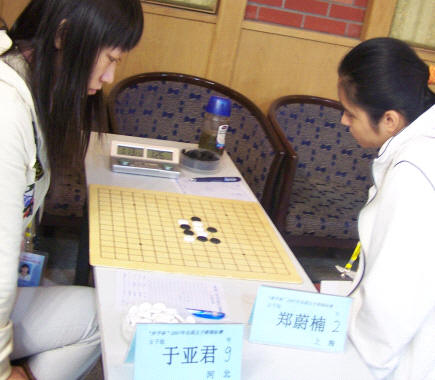

1 郑蔚楠 5 18.5 20.0 5
2 张萌森 5 18.5 17.0 5
3 王 珏 4 19.5 16.0 4
4 于亚君 4 14.5 12.0 4
5 刘 昭 3.5 16.5 10.5 3
6 徐诗倩 3 14.0 6.0 3
7 张钟元 2.5 16.5 8.5 2
8 李 琦 2 23.5 10.0 2
9 黑子凡 1 19.5 5.0 1
10 杨镒萌 0 19.0 0.0 0

郑蔚楠最后一轮在稳得头名的情况下过于冒进,失分于亚君.但依然取得了首届全国五子棋锦标赛女子组冠军
恭喜~~
祝贺~~